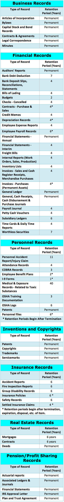

|
Under Budget and On Time Scanning continues to find important resources of information that assist us. We thought we would share a few. These links will connect you to trusted websites that we believe can help you with questions you might have as well. | ||||
Medical | ||||
| What are the financial incentives for having Electronic Heath Records(EHR) according to the 2009 Economic Stimulus Act? | ||||
| http://www.hipaasurvivalguide.com/hitech-act-4101.php | ||||
| What is HIPPA? | ||||
| http://www.hhs.gov/ocr/privacy/ | ||||
Legal | ||||
| Is Electronic Digital Discovery mandatory? | ||||
| http://cyber.law.harvard.edu/digitaldiscovery/digdisc_library_4.html | ||||
|
Document scanning is perfect when information is dense, but needs to be filtered. By scanning legal documents and making them text-searchable, legal workers can simply input relevant search terms and save hours of rifling through irrelevant documents. It can be that easy. |
||||
Financial | ||||
| Do private businesses need to comply to the Sarbanesa Oxley Act? | ||||
| http://en.wikipedia.org/wiki/Sarbanes%E2%80%93Oxley_Act | ||||
IT Questions | ||||
| What is Redundancy? | ||||
|
Redundancy is the concept of storing content and having access availability from more than one location. Redundancy is starting point for any business continuity plan. Control over your data and information is crucial and must be protected from disasters. Storing a real time copy of all of your documents and data in a separate secure location you never run the risk of lost or unavailable access to them at any time. Data Redundancy provides recovery and backup of all of your important documents. In terms of Document Management systems that support any mission critical activities, the accessibility of your documents, and systems that support them is imperative to the success of your organization. |
||||
REDUNDANCY CHECKLIST | ||||
|
When exploring redundancy options with vendors the following questions should be addressed to make sure that their offering meets your recovery needs: |
||||
|
|
||||
WHY IS IT IMPORTANT? | ||||
|
"Time is Money." When your systems fail you lose both time and money not only trying to recover all of your information and documents but the cost of interruption associated with these events. With an implemented redundancy strategy all of your documents and data are backed up and the secondary systems wait idling ready to be called into service. When your primary system fails, your backup will automatically start uninterrupted from secondary data center. Your documents and data, which potentially could be lost due to a system failure, will be recovered from the secondary datacenter. With redundancy you mitigate the exposure and cost that lost or unavailable access to you Document Management system might cause. | ||||
Business Record Retention | ||||
| How long do I need to hold on to my documents? | ||||
|  | ||||